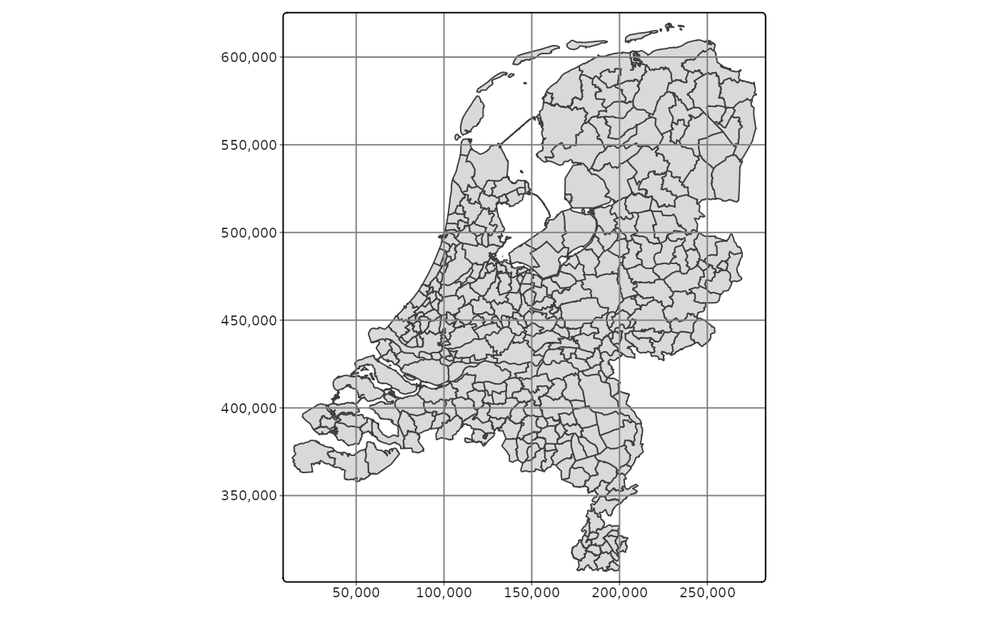
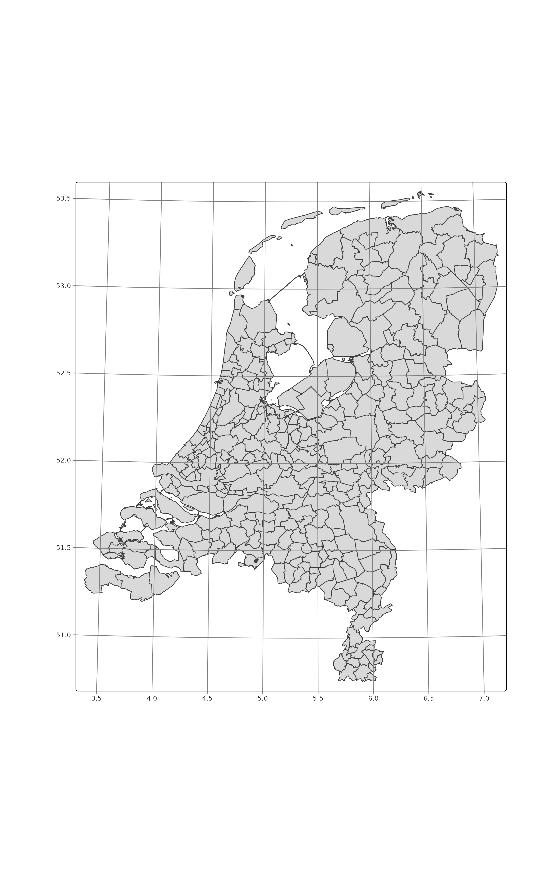
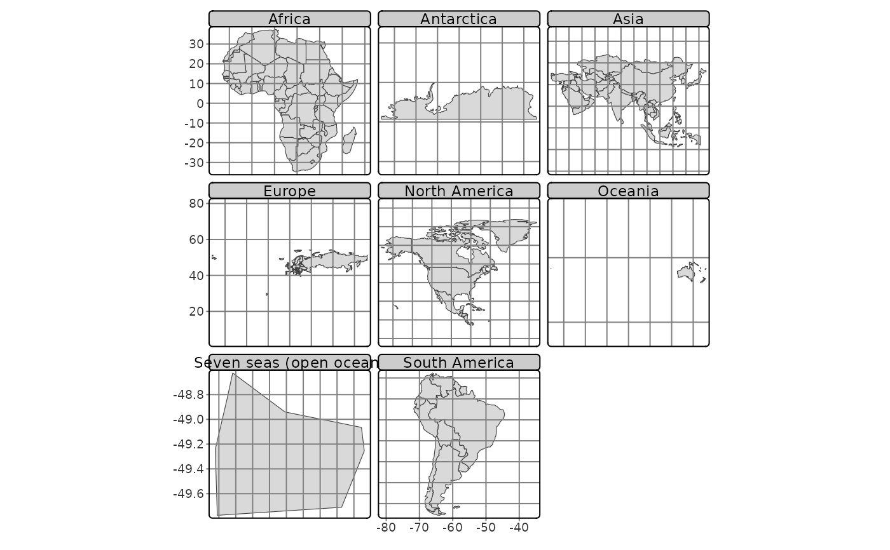
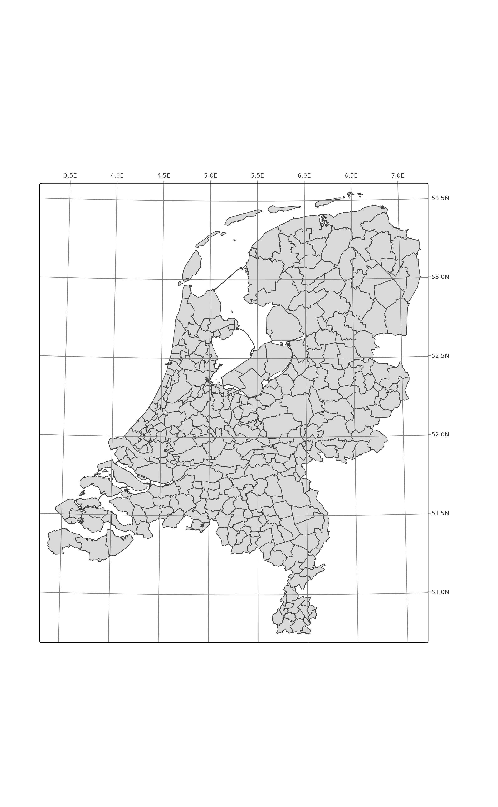
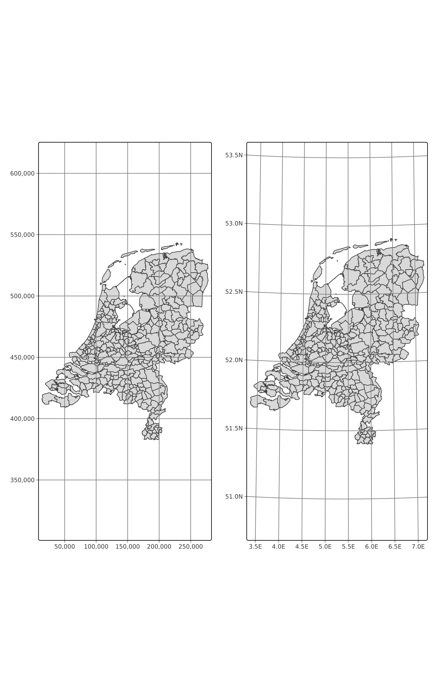
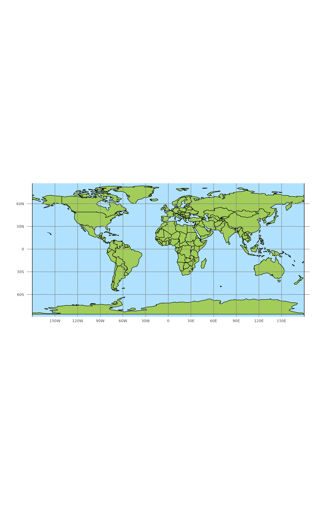

Draw latitude and longitude graticules. It creates a tmap-element that draws coordinate grid lines. It serves as a
layer that can be drawn anywhere between other layers. See tm_grid() for
drawing horizontal lines.
Arguments
- x
X coordinates for vertical grid lines. If
NA, it is specified with a pretty scale andn.x.- y
Y coordinates for horizontal grid lines. If
NA, it is specified with a pretty scale andn.y.- n.x
Preferred number of grid lines for the x axis. For the labels, a
pretty()sequence is used, so the number of actual labels may be different thann.x.- n.y
Preferred number of grid lines for the y axis. For the labels, a
pretty()sequence is used, so the number of actual labels may be different thann.y.- crs
Projection character. If specified, the grid lines are projected accordingly. Many world maps are projected, but still have latitude longitude (EPSG 4326) grid lines.
- labels.format
List of formatting options for the grid labels. Parameters are:
- fun
Function to specify the labels. It should take a numeric vector, and should return a character vector of the same size. By default it is not specified. If specified, the list items
scientific,format, anddigits(see below) are not used.- scientific
Should the labels be formatted scientifically? If so, square brackets are used, and the
formatof the numbers is"g". Otherwise,format="f", andtext.separator,text.less.than, andtext.or.moreare used. Also, the numbers are automatically rounded to millions or billions if applicable.- format
By default,
"f", i.e. the standard notationxxx.xxx, is used. Ifscientific=TRUEthen"g", which means that numbers are formatted scientifically, i.e.n.dddE+nnif needed to save space.- digits
Number of digits after the decimal point if
format="f", and the number of significant digits otherwise.- ...
Other arguments passed on to
formatC()
- labels.cardinal
Add the four cardinal directions (N, E, S, W) to the labels, instead of using negative coordinates for west and south (so it assumes that the coordinates are positive in the north-east direction).
- ...
Arguments passed on to
tm_gridcolColor of the grid lines.
lwdLine width of the grid lines
alphaAlpha transparency of the grid lines. Number between 0 and 1. By default, the alpha transparency of
colis taken.labels.showShow tick labels. Either one value for both
xandyaxis, or a vector two: the first forxand latter fory.labels.posposition of the labels. Vector of two: the horizontal ("left" or "right") and the vertical ("top" or "bottom") position.
labels.sizeFont size of the tick labels
labels.colFont color of the tick labels
labels.rotRotation angles of the labels. Vector of two values: the first is the rotation angle (in degrees) of the tick labels on the x axis and the second is the rotation angle of the tick labels on the y axis. Only
0,90,180, and270are valid values.labels.margin.xMargin between tick labels of x axis and the frame. Note that when
labels.inside_frame = FALSEandticks = TRUE, the ticks will be adjusted accordingly.labels.margin.yMargin between tick labels of y axis and the frame. Note that when
labels.inside_frame = FALSEandticks = TRUE, the ticks will be adjusted accordingly.labels.space.xSpace that is used for the labels and ticks for the x-axis when
labels.inside_frame = FALSE. By default, it is determined automatically using the widths and heights of the tick labels. The unit of this parameter is text line height.labels.space.ySpace that is used for the labels and ticks for the y-axis when
labels.inside_frame = FALSE. By default, it is determined automatically using the widths and heights of the tick labels. The unit of this parameter is text line height.labels.inside_frameShow labels inside the frame? By default
FALSE.ticksIf
labels.inside_frame = FALSE, should ticks can be drawn between the labels and the frame? Either one value for bothxandyaxis, or a vector two: the first forxand latter fory.linesIf
labels.inside_frame = FALSE, should grid lines can be drawn?ndiscrNumber of points to discretize a parallel or meridian (only applicable for curved grid lines)
zindexzindex of the pane in view mode. By default, it is set to the layer number plus 400. By default, the tmap layers will therefore be placed in the custom panes
"tmap401","tmap402", etc., except for the base tile layers, which are placed in the standard"tile". This parameter determines both the name of the pane and the z-index, which determines the pane order from bottom to top. For instance, ifzindexis set to 500, the pane will be named"tmap500".groupName of the group to which this layer belongs. This is only relevant in view mode, where layer groups can be switched (see
group.control)group.controlIn view mode, the group control determines how layer groups can be switched on and off. Options:
"radio"for radio buttons (meaning only one group can be shown),"check"for check boxes (so multiple groups can be shown), and"none"for no control (the group cannot be (de)selected).
Examples
current.mode <- tmap_mode("plot")
#> ℹ tmap mode set to "plot".
tm_shape(NLD_muni) +
tm_polygons() +
tm_grid()

tm_shape(NLD_muni) +
tm_polygons() +
tm_grid(crs = 4326)

tm_shape(NLD_muni) +
tm_polygons() +
tm_grid(crs = 3035, labels.inside.frame = TRUE)
tm_shape(World) +
tm_polygons() +
tm_facets(by = "continent") +
tm_grid(labels.inside.frame = TRUE)

tm_shape(NLD_muni) +
tm_polygons() +
tm_graticules()
tm_shape(NLD_muni) +
tm_polygons() +
tm_graticules(labels.pos = c("right", "top"))

data(NLD_muni, World)
tmap_arrange(
qtm(NLD_muni, borders = NULL) + tm_grid(),
qtm(NLD_muni, borders = NULL) + tm_graticules()
)
#>
#> ── tmap v3 code detected ───────────────────────────────────────────────────────
#> [v3->v4] `qtm()`: use `col = NA` instead of `borders = NULL`.
#> [v3->v4] `qtm()`: use `col = NA` instead of `borders = NULL`.

qtm(World, shape.crs = "+proj=robin", style = "natural") +
tm_graticules(ticks = FALSE) +
tm_layout(frame=FALSE)
#> Linking to GEOS 3.10.2, GDAL 3.4.1, PROJ 8.2.1; sf_use_s2() is FALSE

tmap_mode(current.mode)
#> ℹ tmap mode set to "plot".